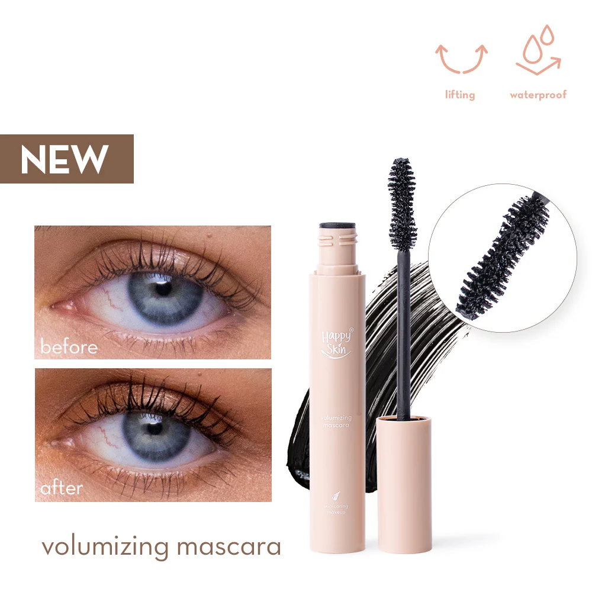
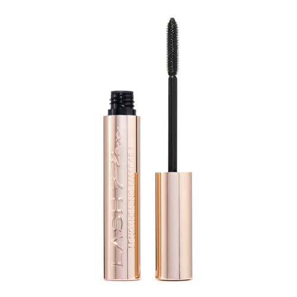

Mascara
It typically comes in a tube with a wand applicator, allowing for easy and precise application. Mascara formulas vary, offering different effects such as volumizing, lengthening, curling, or waterproofing. Some mascaras contain nourishing ingredients to condition and strengthen lashes, while others focus on intense pigmentation for a dramatic look. Mascara is a staple in many makeup routines, helping to open up the eyes and create a wide-awake look.

Volumizing mascara contains fibers or waxes that cling to the lashes, adding thickness and fullness. It creates a dramatic effect, making lashes appear denser and more voluminous with each coat.

Lengthening mascara features a formula that coats each lash from root to tip, extending their length for a fluttery, elongated look. It enhances natural lash length without clumping or weighing down the lashes.